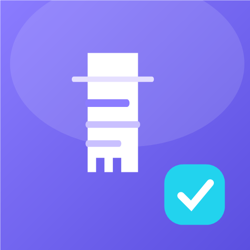

Suivi des Bons — وصلات التوصيل، بدون إنترنت
أي ملف أختار؟
إذا كان هاتفك من 2017 أو أحدث → اختر arm64 (الأصغر والأسرع).
إذا كان قديئًا أو لا يعمل → جرّب arm32.
غير متأكد؟ جرّب arm64 أولًا، إن لم يُثبَّت جرّب الآخر.
تثبيت من مصادر غير معروف.أضف لقطات حقيقية من هاتفك: adb exec-out screencap -p > shots/01.png
هاتفك لا يقبل أيٌّ من الملفين؟ اطلب نسخة موحّدة (70 ميغا) عبر البريد.
التطبيق لا يرسل أي بيانات إلى أي خادم. كل المعلومات تُحفظ على جهازك فقط، وتُحذف نهائيًا عند حذف التطبيق.
الأذونات المستعملة: VIBRATE (اهتزاز عند المسح) فقط.
INTERNET و ACCESS_NETWORK_STATE تُضاف تلقائيًا
من مكتبة ML Kit الخاصة بقارئ النص.